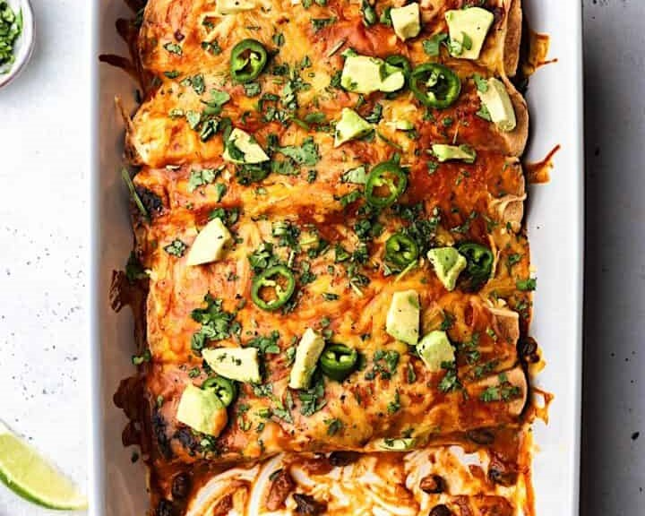

Cooker's Kitchen

Black Bean and Sweet Potato Enchiladas
Ingredients:
- 2 medium sweet potatoes, peeled and diced
- 1 can of black beans, drained and rinsed
- 1 small onion, chopped
- 2 cloves of garlic, minced
- 1 teaspoon chili powder
- 1 teaspoon ground cumin
- Salt and black pepper to taste
- 8 flour tortillas
- 2 cups enchilada sauce
- 1 cup shredded cheddar cheese
- Fresh cilantro, for garnish
Instructions:
- Preheat the oven to 375°F.
- In a large saucepan, cook the diced sweet potatoes until tender, about 10 minutes.
- In a large bowl, combine the cooked sweet potatoes, black beans, onion, garlic, chili powder, cumin, salt, and black pepper.
- Spoon about 1/3 cup of the sweet potato and black bean mixture down the center of each tortilla.
- Roll up the tortillas and place them seam-side down in a 9x13 inch baking dish.
- Pour the enchilada sauce over the tortillas and sprinkle the shredded cheese on top.
- Bake the enchiladas in the preheated oven for 20-25 minutes, or until the cheese is melted and bubbly.
- Serve the Black Bean and Sweet Potato Enchiladas hot, garnished with fresh cilantro.